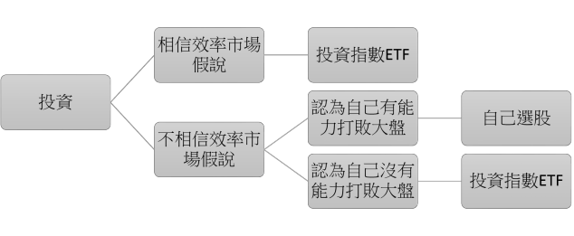

關於效率市場假說
今天要跟大家介紹效率市場假說(efficient market hypothesis)。我認為效率市場假說是每個投資人都應該要了解的概念。聽起來好像有點難，不過請放心，我會盡可能簡單的說明，讓大家都聽得懂。
介紹
那效率市場假說是甚麼東西呢？用一句話來說明就是：「根據效率市場假說，沒有人可以長期打敗大盤。」大家一定會想知道效率市場假說是怎麼得出這個結論的。他的基本論述是這樣的：
- 市場上的投資人都很聰明且理性，並樂於追逐獲利。
- 市 場上的資訊都會快速的被所有投資人得知。
- 因為(1)、(2)，某檔股票如果有新消息傳出，投資人都會很快知道，並立即在股價上做出反應。
- 因為(3)，每檔股票的股價都剛好處在他應該在的位置，不高辜也不低估。
- 因為(4)，投資人的收益應該彼此都差不多，也就是趨近於大盤(投資人的平均)的報酬率，沒有人會打敗大盤。
效率市場假說的「效率」，可以說就是股價往內在價值趨近的效率。如果還是不太了解，也沒關係。下面用舉例的方式說明應該會更清楚。大家可以想像一下，如果有一天Google首頁上拍賣一隻全新的iPhone(假設官網售價是新台幣2萬元)，從1元開始競標，會發生甚麼事：
- 大家都想要便宜貨。
- 大家都知道iPhone的售價，因為蘋果的官網上都有公布。
- Google是非常有名的網站，所以這個1元iPhone的消息很快就會被很多人知道。
- 因為1元的iPhone比實際價值(官網售價)便宜的多，所以大家都會搶著加價。
- 所以那隻iPhone會快速的被競標到接近2萬元(例如：1萬9950元)。
- 最後結果就是該iPhone的得標價格會非常接近它的實際價值，沒有人可以撿到很大的便宜。
效率市場假說與投資策略
效率市場假說既然只是一個假說，不是定理，就說明了他沒有被證明。因此它可能是對的，也可能是錯的。在投資之前，我們必須要做出決定：要不要相信效率市場假說。如果我們選擇相信效率市場假說，那我們最好的策略就是買進指數ETF(exchange-traded fund)，然後完全不操作。因為效率市場理論指出，沒有人可以打敗市場，等同於市場的報酬率已經是最好的結果。所以如果相信效率市場假說，還自己選股，那完全是在浪費時間。如果我們認為效率市場假說並不完全正確，就可以相信有些厲害的投資人可以打敗大盤。不過如果沒有自信可以成為打敗大盤的一員，那還是應該買進指數ETF最好。簡單來說就如下圖，唯有我們相信效率市場假說不完全正確，同時有自信可以打敗大盤，自行選股(主動投資)才是合理的。否則應該直接買進指數ETF就好(被動投資)。

只有效率市場假說出錯的時候，才有可能打敗大盤。如果要主動投資，就必須認為效率市場假說不是完全正確的，否則就ETF就好。
效率市場假說是對是錯
效率市場假說現在還無法從學理上證明或反證。我當然也無法直言他的對錯，只能給出我的看法。我的立場跟Howard Marks一樣，那就是認為效率市場假說在大部分時間都是對的，不過偶而也會出錯。而我們就是要抓住效率市場假說的錯誤，並嘗試打敗大盤。不過要判斷出效率市場假說的錯誤，並且把握機會行動，是非常難的一件事情。所以可以長期打敗大盤的人少之又少。
至於為甚麼效率市場假說有時候會出錯，還有會在哪些市場出錯呢？我認為那是因為他本身的前提就有問題。效率市場假說的前提之一是投資人都是冷靜且理性的。但事實上，人類是有情緒的。投資人在市場走到極端的時候(泡沫及崩盤)，會變得非常不理性。舉例來說，在市場泡沫化的時候，股票的價格都漲到不可思議的程度，遠遠超過了其內在價值。這時候的風險是非常高的，理性的投資人會選擇避開甚至做空。但是大部分投資人會受到貪婪的驅使而不斷追高，並把泡沫越吹越大。相反的，在市場崩跌到底部的時候，價格遠低於價值的便宜股票比比皆是，投資人理應勇敢買進。但是恐懼卻讓大部分人把持股賣在低點，更不用說在低點買進了。
另外一種可能性是某些市場有進入障礙。例如比較小型的市場，可能無法容納大型的投資機構龐大的資金，只能容納資金相對較少的投資人。或者是市場太小，所以投資機構覺得不值得花心力來研究。這些因素都有可能造成某些市場比較沒有效率。要注意，這裡說的比較沒有效率是跟大型市場相比。因為該市場還是存在許多聰明、理性、資訊來源豐富的投資人，所以效率應該也不低，只是相對於大型市場，效率可能稍微差一點。
如何應對
市場的無效率，對投資人的意義就是提供定價錯誤。所謂定價錯誤，就是指某檔股票的價格與真實價值不符，可能過高也可能過低。而這些定價錯誤提供了我們打敗大盤的機會。不過由於錯誤的價格可能低於價值，也可能高於價值。所以我們也有可能因為定價錯誤而得到低於大盤的報酬率，甚至是虧損。至於如何把握定價錯誤，進而打敗大盤，就是我們需要努力的地方。
在有效率的市場中，除了崩盤或泡沫等少數機會，其餘時間有兩種可行的策略。一是就買ETF，獲得接近大盤的報酬率。二是避開這種市場，專心在較無效率的市場中尋找投資機會。對我們散戶來說，資金少是一個很顯著的優勢，因為方便我們進入一些較無效率的市場。上面有提到小型市場(例如興櫃)，由於投資者較少，所以可能比較沒有效率，定價也比較有可能出現錯誤，是值得我們努力的地方。也就是說，我們應該要在較沒有效率的市場嘗試打敗市場。
市場是很多股票的總和，在一個市場中，股票有熱門也有冷門，當然效率也有差。在個股的層次上，應該可以說越大型、知名、熱門的股票就越有效率。所以對於大型的股票，如果你認為它被低估了想要買進，那就必須有非常確定的證據或推測去支持你的想法。不論在哪個市場，如果發現有疑似被低估的股票可以投資，我覺得都要先問問自己幾個問題：
- 如果這檔股票的股價確實是被低估了，為甚麼大家要便宜賣給你呢？
- 是不是自己想錯了，或者沒有想到到某些別人有想到的不利因素，其實它現在的價位剛好合理，沒有被低估？
這裡澄清一下我的觀點。我的意思不是說不要投資很有效率的大型市場，而是說在大型市場內如果打敗大盤是非常難的。如果你認為某檔大型市場的股票有存在定價錯誤，可以讓你獲得超越大盤的報酬率，那就必須有非常充分的理由才行。我也不是說投資相對較沒有效率小型市場比較好賺，而是說小型市場比較容易出現定價錯誤。但是股價可能過高也可能過低，你要有能力認出錯誤的定價，並判斷價格是過高還是過低。如果做反了，反而會輸給大盤。
要注意的地方
還是要提醒大家，投資是很難的，千萬不要過度自信。就算相信市場有時候會沒有效率，也不保證就可以賺到高於大盤的報酬率。打敗大盤是非常難的，想要打敗大盤需要付出的努力是超乎想像的。(請看我的其他文章：我的投資流程(上)、我的投資流程(下))市場上大家都想要賺錢，自己憑甚麼最後打敗大部分人呢？自己真的可以比市場上所有人都還要聰明嗎？由於大打敗大盤的人永遠只是少數，所以對於大部分人來說，投資ETF還是最好的選擇。
另外，上面說的小型市場比較沒有效率，值得我們努力。但這是針對有足夠投資技能的人來說。如果投資技能不夠好，那在較沒有效率的市場反而賠錢機率更大。我們不該只是因為某檔股票在小型市場中交易，或是某檔股票很冷門就去買它。投資必須經過客觀的事實和理性的推理佐證，才可以下投資決策。
總結
- 根據效率市場假說，沒有人可以長期打敗大盤。
- 唯有相信效率市場假說不完全正確，而有自信可以打敗大盤，才應該自行選股，否則應該投- 資指數ETF。
- 我認為效率市場假說在大部分時間都是對的，不過偶而也會出錯。
- 市場的無效率提供定價錯誤，而定價錯誤提供了我們打敗大盤的機會。
- 我們應該要在較沒有效率的市場嘗試打敗市場。
- 對於大部分人來說，投資ETF還是最好的選擇。